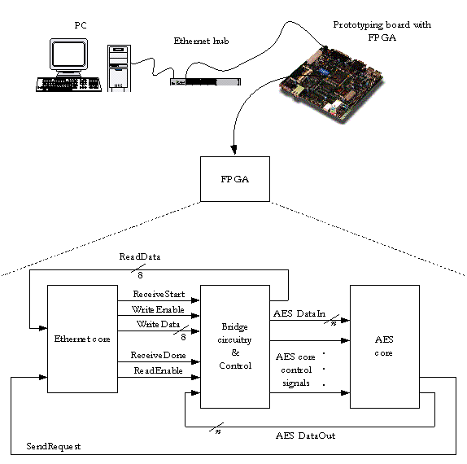

EEE6225 Systems Design
| Communication of the AES core with the PC |
| The Figure below shows the Ethernet based
communication setup you could use to implement your AES
design. However, the serial alternative is somewhat simpler
and thus the preferred method. |
|
 |
| The software interface, which will be designed by the system architect, will enable you to send data from the PC to the FPGA via a computer network. We can see from the Figure that in addition to the software interface, the system architect is also required to design a hardware interface. The Ethernet core (this will be provided to you) outputs a series of control signals which you should use to control data flow to and from your AES core. The input and output data buses of the Ethernet core are fixed at 8–bits wide, so you should format the data to that which suits your AES design (n bits in the Figure) using the bridge circuitry. This will typically involve the use of a dual–port RAM with a port a : port b data bus–width ratio of 8:n. |